Before you start, a few things to know
This is the hub at night: 26 patients across four rural hospitals, one intensivist watching all of them. Alliance is the smallest, a critical access hospital with no ICU. Tonight there's a winter storm.
- Open the prototype on Monitoring. If you've already played it, use Prototype › Reset prototype first.
- Dale isn't on the page yet. He arrives with the scenario, when Alliance's ED asks the hub for help.
- New to the page? The Scenario 1 storyboard walks through the hospital tabs, the quick filters, the monitoring cards and the alert notifications.
- Some beats arrive on their own, so keep his alert open for them: the connection drops about 6 seconds into the call (beat 2), and beats 5 and 6 arrive about 6 and 10 seconds after you click Keep at Alliance (beat 4). If his alert is closed when beat 6 arrives, a toast, Social needs at discharge, brings you back: Review referrals opens his alert at the referrals.
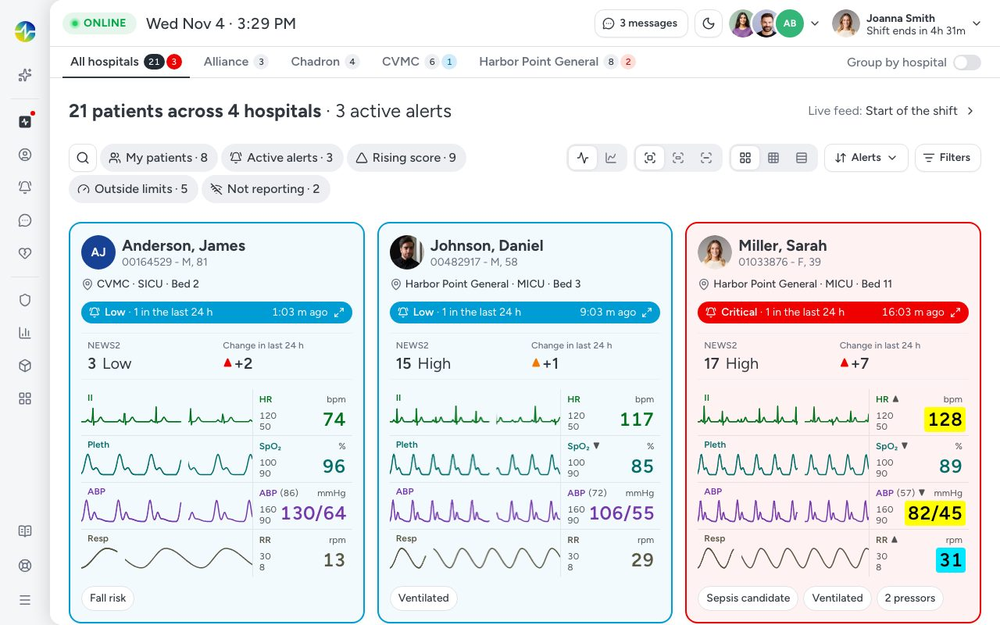
1. Consult starts on video
22:15Dale Reynolds, 64, a rancher with severe COPD. He's uninsured since a seasonal job ended, and he ran out of the home oxygen he can't afford four days ago. His blood gas on arrival: pH 7.24, CO₂ 78. The ED physician has started BiPAP and calls the hub. Before answering, the intensivist already sees who's calling, about whom, what they're asking and the latest numbers. One click on Answer, and they're looking at him with his nurse.
Steps
- Open Prototype at the bottom of the Sidebar and pick Scenario 2: COPD.
- About 2 seconds later Dale's card joins the page, first, with its red Critical bar, and Alliance's tab counts him. His Critical alert toasts at the bottom right.
- About 4 seconds after that, Dr. Brian Keller's call rings in a second toast, in front of it: "Urgent video consult request", how long it has rung, the patient, his Reason ("Hypercapnic failure on BiPAP. Can we keep him here?") and the Latest values.
- Point out that the call can't be missed: it rings until it's answered or declined, over any page, even with notifications paused.
- Click Answer. Dale's alert opens with the video consult already on: Megan Foster, RN, at ED Bay 3, his NEWS2 7 and his live monitor (RR 30, SpO₂ 88% on BiPAP).
- Click his COPD exacerbation flag, under his monitor: the arrival gas, GOLD 3 with 40 pack-years and no oxygen for 4 days, and his BiPAP settings. Esc closes it. Be quick: the connection drops about 6 seconds into the call.
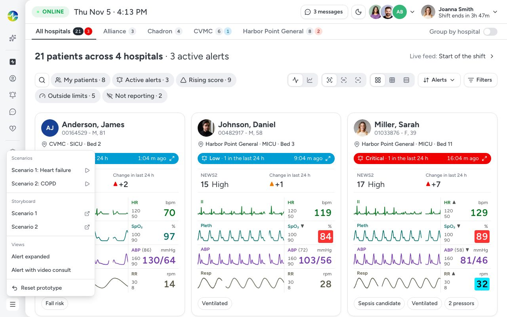
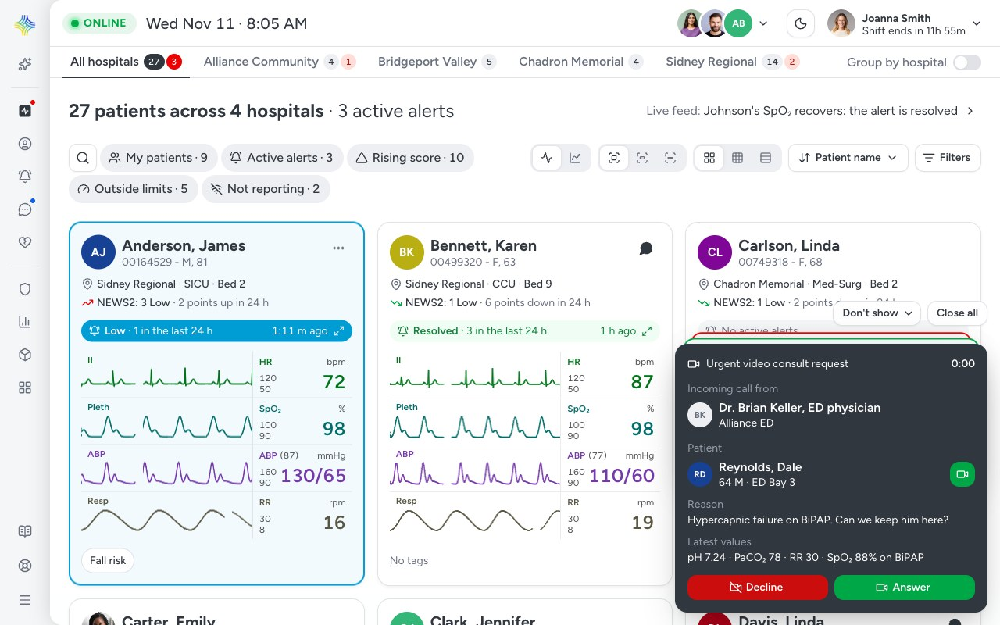
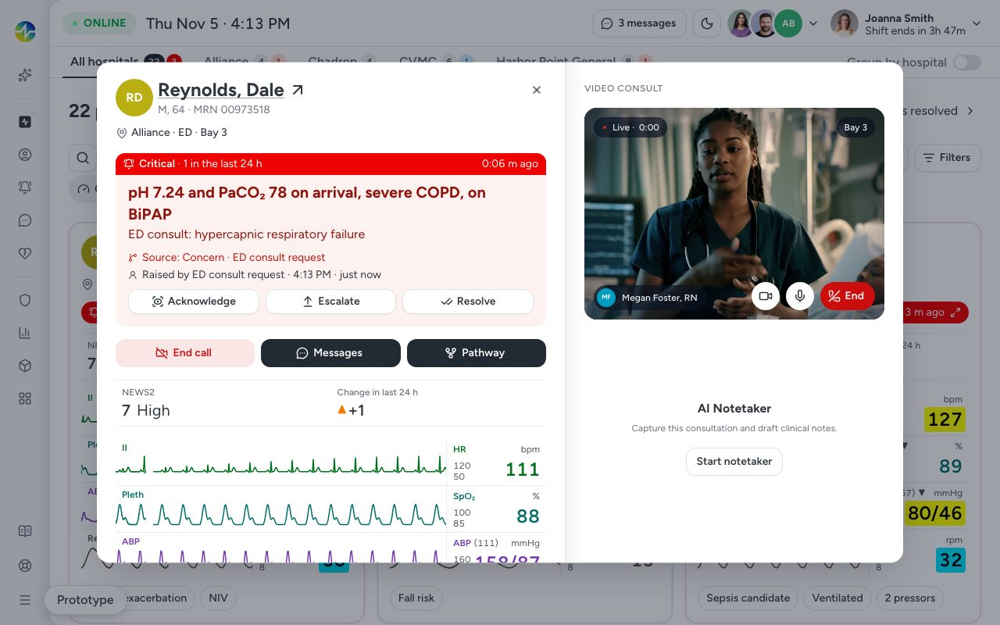
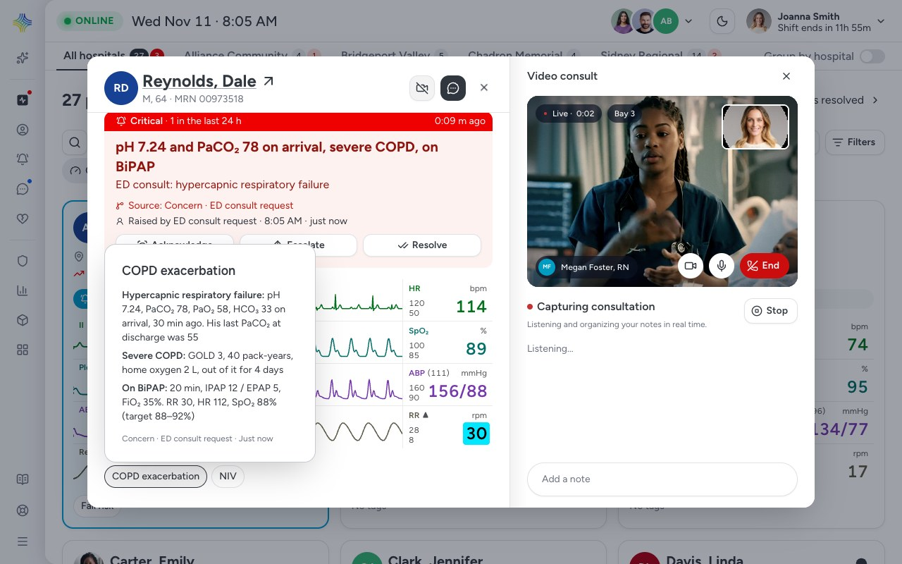
2. Network drops
Mid-consultThe storm takes Alliance's connection down to a fraction of normal. The video freezes, and the platform switches to low-bandwidth mode on its own: the call goes on as audio, his vitals come every 30 seconds instead of streaming, and the bedside sends still photos as they're taken. A banner shows the mode, and the monitor says how old its numbers are, so nobody mistakes held data for live.
Steps
- Nothing to click. About 6 seconds into the call the picture freezes, greyed: "Connection weak · switching to audio only…".
- About 2 seconds later the call is audio only ("Video paused for low bandwidth"), and Low-bandwidth mode tops the Video consult panel, with how long it has lasted. About 3 seconds later Megan Foster's note arrives and the Messages column opens on its own to the right of the call: "Video froze on our side. Rachel will send the BiPAP screen and the next gases here."
- Point at his monitor: it shows the last hour's trends, with "Low bandwidth: vitals every 30 s · updated 12 s ago" over the numbers.
- About 8 seconds later, a photo of the BiPAP screen arrives in Messages, sent by Rachel Lindgren, RRT, with its readings: IPAP 12, EPAP 5, FiO₂ 35%, RR 28.
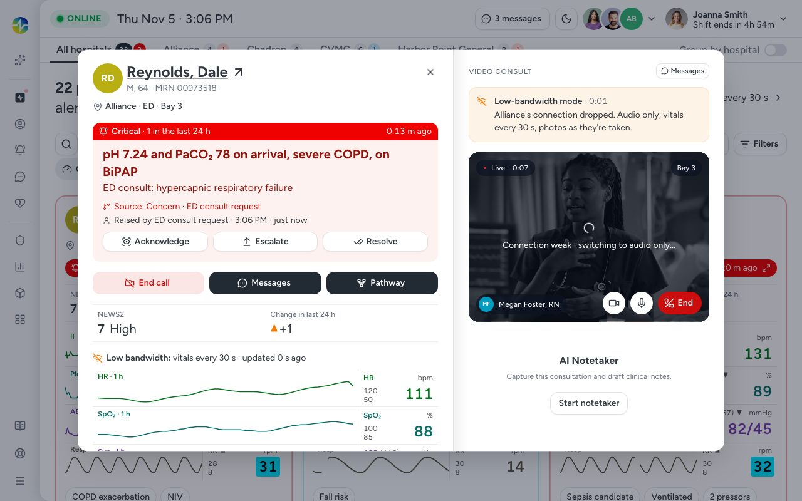
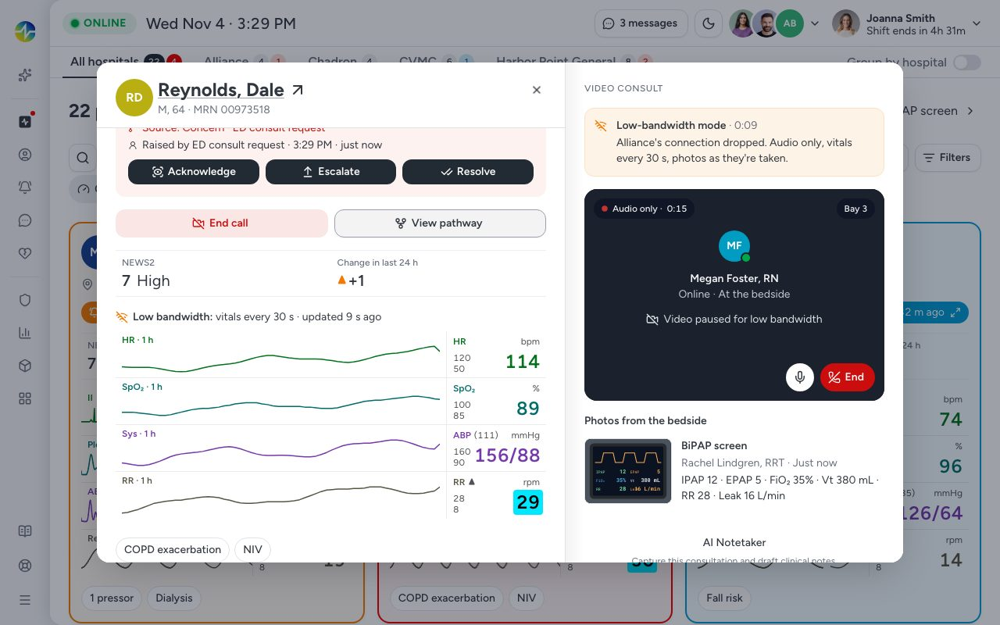
3. Transport-aware decision
The usual answer is to transfer him to the ICU in Scottsbluff. Tonight that isn't possible: air transport is grounded by the storm and the highway is closed, ETA unknown. The platform puts what the plan needs next to what Alliance has tonight, and the transport status beside it. The plan becomes: stabilize him here, with an explicit failure plan.
Steps
- Click View suggested pathway under his alert, right above the monitor. The COPD exacerbation pathway takes the Messages column's place, to the right of the call (Messages, right of his name, brings the thread back): BiPAP settings with a CO₂ target, nebulizers, steroids, an antibiotic, and intubation readiness.
- Click Accept. About 4 seconds later it's Co-signed by Dr. Brian Keller, the ED physician, and Keep or transfer opens under it.
- Scroll the Pathway panel down. Walk through what the plan needs against Alliance tonight (BiPAP, a respiratory therapist, an airway plan, monitoring, the nurse stretched), then If transferred: Regional West has a bed, but Air reads Grounded and Ground Highway closed · ETA unknown.
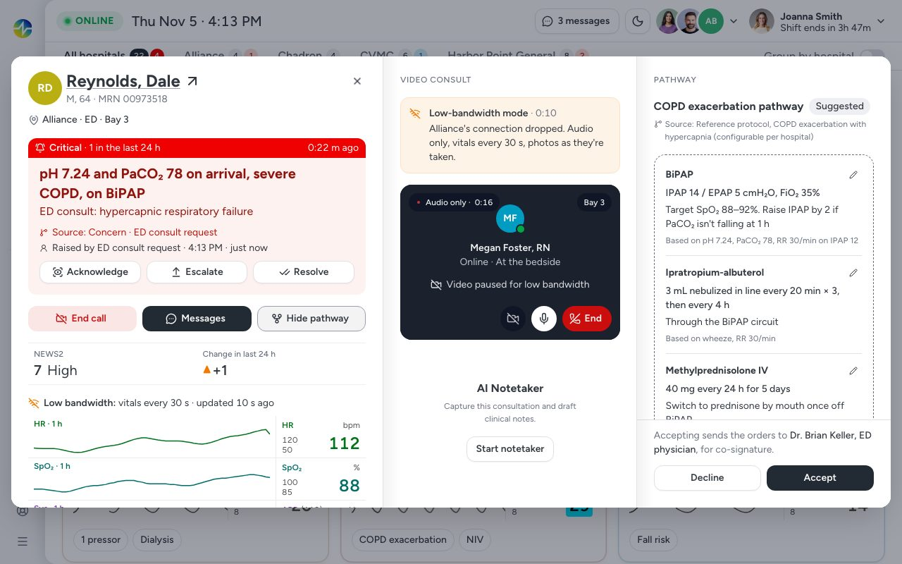
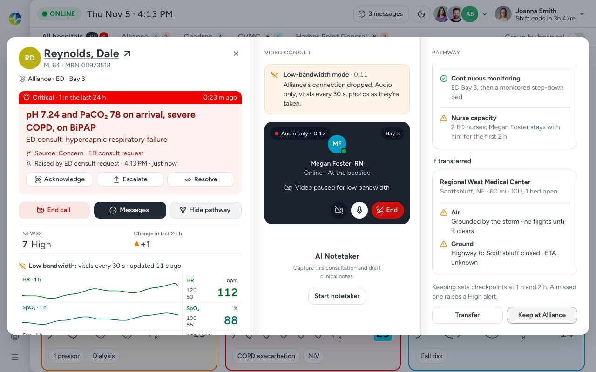
4. NIV failure tracking
Keeping him sets the COPD pathway's checkpoints: a repeat blood gas at one hour and at two, with pH, CO₂, mental status and work of breathing. If he misses one, the plan is already made: the intubation checklist and his starting ventilator settings were prepared with the ED physician in advance, just in case.
Steps
- Click Keep at Alliance. The 1 h and 2 h checkpoints it sets appear, each with what has to hold.
- Scroll up to the pathway's Intubation readiness: checklist done, ventilator set to AC, VT 450 mL, rate 14, PEEP 5, FiO₂ 40%, prepared with Dr. Keller and used only if NIV fails at a checkpoint.
- Back at Why keep at Alliance?, type a reason (e.g. Air grounded and the highway closed. BiPAP, RT and an airway plan are here.) and click Keep at Alliance.
- Keep his alert open: beat 5 arrives on its own, about 6 seconds later.
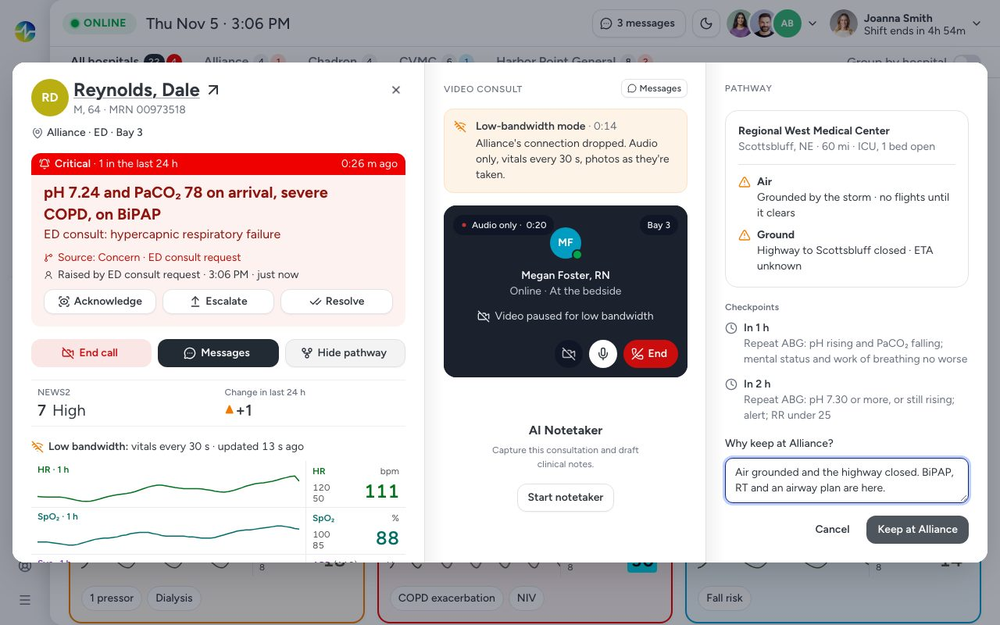
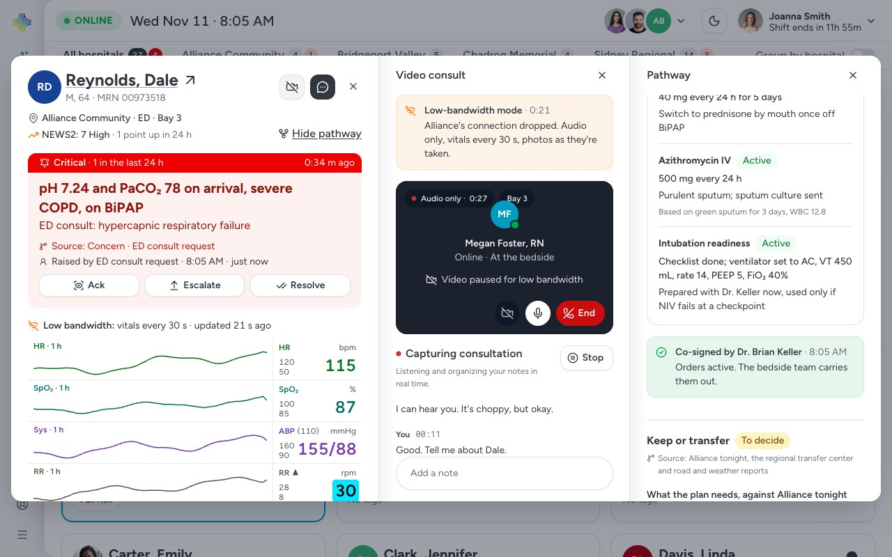
5. Resolution
2 h on NIVTwo hours on BiPAP. At one hour his pH is 7.28 and his CO₂ 70; at two hours, pH 7.31 and CO₂ 64, and he's speaking in full sentences. NIV is working. He was never intubated and never transferred: he stays in a monitored bed at Alliance, with the hub following him.
Steps
- Nothing to click at first. About 6 seconds after Keep at Alliance, both blood gases arrive as photos, with Megan's "2 h gas is back: pH 7.31, PaCO₂ 64.", and Messages opens on its own in Pathway's place.
- Click View pathway under his alert: both checkpoints read Passed with his repeat gases, and Transfer avoided is at the bottom: 60 mi each way on a closed road, 2 h of NIV, no intubation.
- Point out his alert: Resolved by Megan Foster, RN, and his score now NEWS2 5, Medium.
- His monitor still says it's in low-bandwidth mode: its numbers change only every 30 seconds.
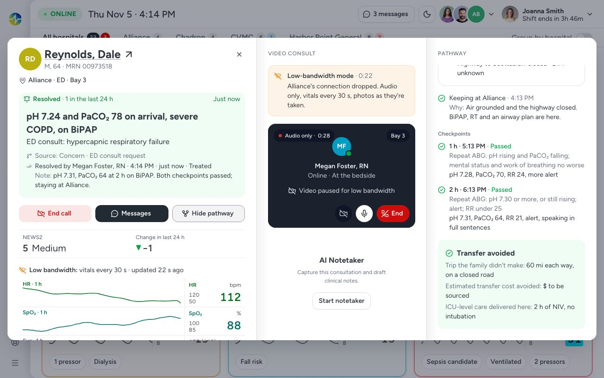
6. Social needs flagged
At dischargeGetting him through the night isn't the end. He'll go home uninsured, to oxygen he can't afford. The discharge workflow reads his chart, flags both, and drafts the referrals: a Medicaid eligibility screening, which would cover his oxygen, and pulmonary rehab in Alliance instead of 60 miles away. Nothing is sent until someone says who agreed to it.
Steps
- Nothing to click at first. About 10 seconds after Keep at Alliance, Social needs at discharge appears under Transfer avoided, "2 to send", and his flags gain Uninsured and Can't afford home oxygen. Scroll the Pathway panel down to it.
- Walk through Flagged: each need with where it comes from in his chart, and "Payer on record: Uninsured".
- On Medicaid eligibility screening, pick The patient under Who agreed? and click Send referral.
- On Pulmonary rehab, closer to home, pick Family, type his daughter, Amy Reynolds and click Send referral. The badge reads Done.
- Close his alert. On Monitoring his card reads Resolved, NEWS2 5.
- Click his card to open his page. The Discharge tab has the same referrals, already sent. On Overview, Activity lists the night with who did what, the referrals and who agreed to them included. His chest X-ray is under Chart.
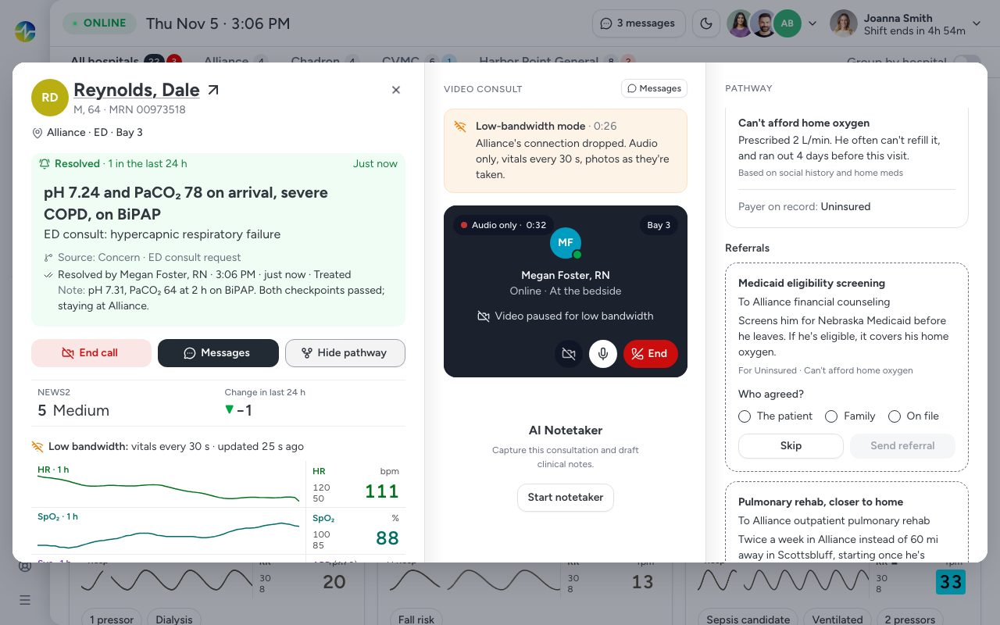
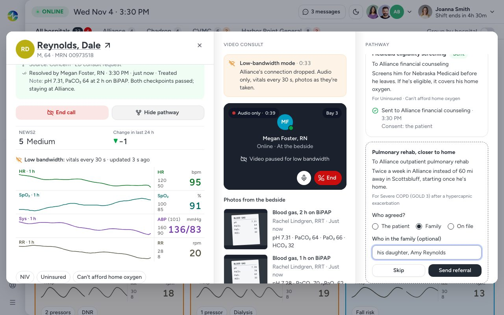
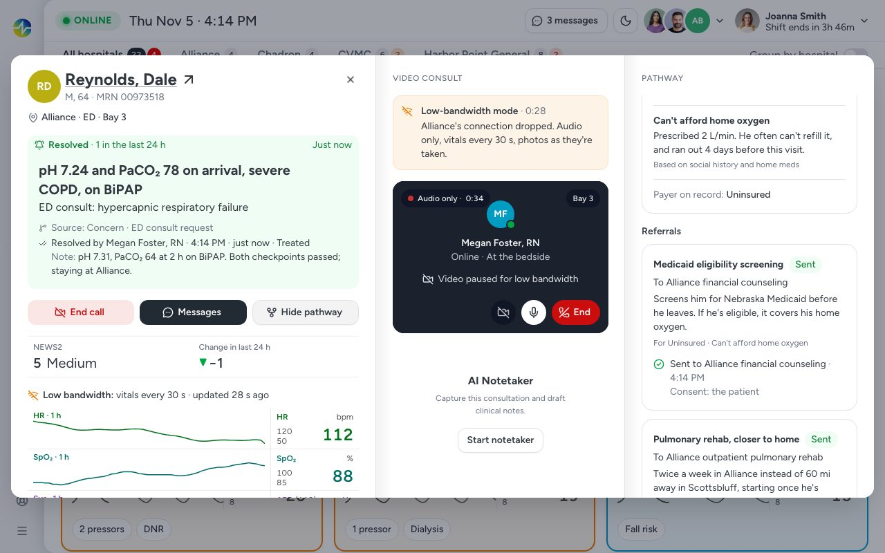
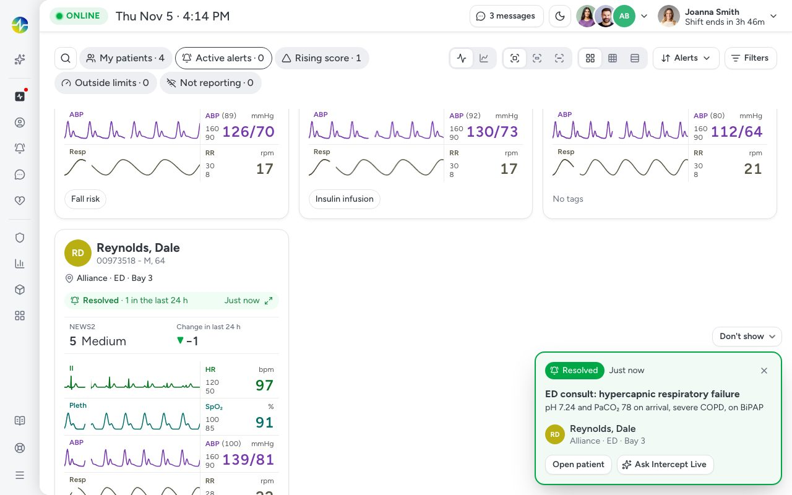
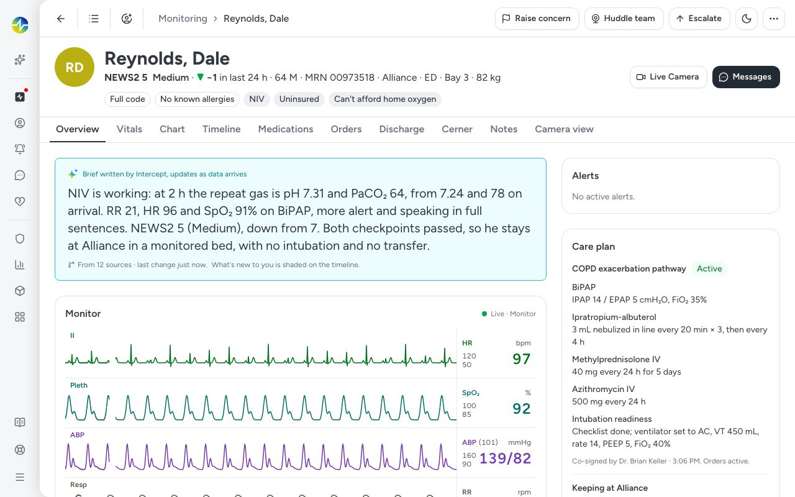
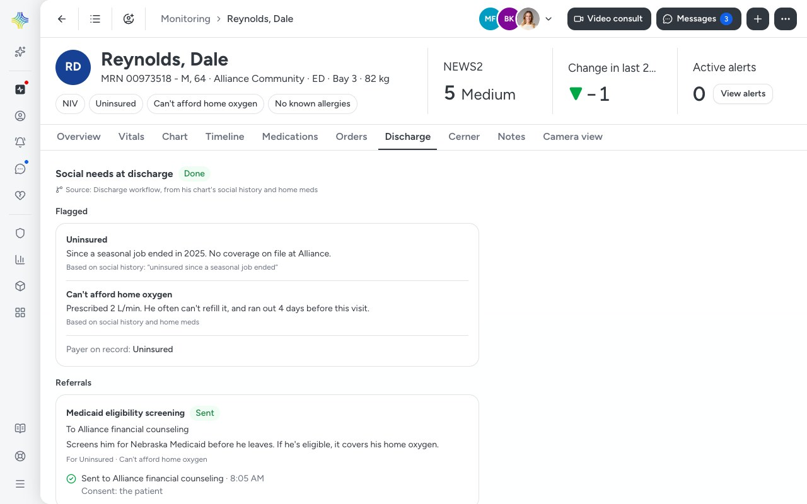
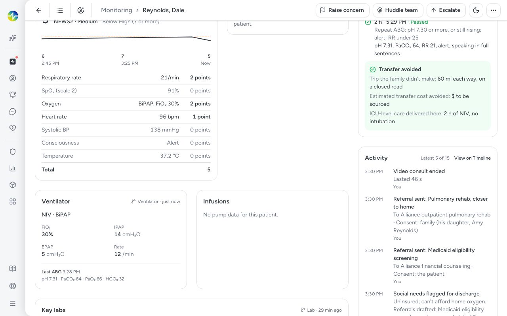
Known gaps
Where the prototype differs from the scenario, in case someone asks.
| What the audience sees | The scenario | Why |
|---|---|---|
| Today's clock time; two hours on BiPAP pass in about 6 seconds | 22:15, then 2 h on NIV | The prototype runs on the real clock, so checkpoints pass before their due times |
| Low-bandwidth mode only in his alert. His Monitoring card and his page keep streaming waveforms while the connection is down | "A banner shows the mode so nobody thinks data is live when it isn't" | Not built yet for the card and the page |
| The connection never comes back; vitals every 30 s | — | What restores video, and how often vitals come, are still open (PRD Bedside camera) |
| Intubation readiness is one line of the pathway | "The intubation checklist and starting ventilator settings are prepared" | A checklist to work through isn't built yet |
| The answered call shows Megan Foster, RN, at the bedside | Dr. Keller, the ED physician, calls | The call reaches the bedside; the caller isn't on it yet |
| Decline only ends the call; his alert stays | — | Handing the request to another intensivist isn't built yet |
| The chest X-ray is on his page (Chart), not in his alert | The intensivist reviews the ABG and the chest X-ray | The alert shows the findings behind it; imaging lives in the chart |
| The hub clinician sends the referrals | "The discharge workflow … generates referrals" | Whether Alliance's case manager sends them instead is open |
| Minutes in fallback mode show only in the banner | A metric: consult continuity during network degradation | Not written to the record yet |
| Doses, settings, programs, capacities | — | Illustrative; need clinical and case-management review |